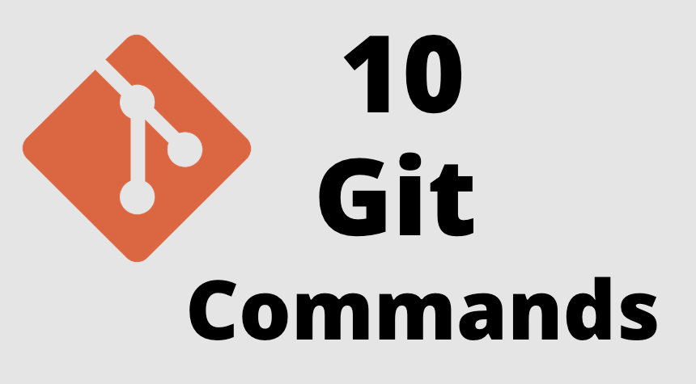

10 Comandos de Git Que Todo Desarrollador Debería Saber
Git es una parte importante de quien programa a diario (especialmente si estás trabajando con un equipo) y se usa extensamente en la industria de software. Desde que existe una gran variedad de comandos que puedes utilizar, dominar Git requiere tiempo. Pero algunos comandos se utilizan más frecuentemente (algunos hasta a diario varias veces). Por tanto, en este artículo, les compartiré y explicaré los 10 comandos de Git más usados que todo desarrollador debería de conocer.
Nota: Para entender este artículo, tienes que conocer lo básico acerca de Git.
Clonar un repositorio en un nuevo directorio
Git clone es un comando para descargarte el código fuente existente desde un repositorio remoto (como Github, por ejemplo). En otras palabras, Git clone básicamente realiza una copia idéntica de la última versión de un proyecto en un repositorio y la guarda en tu ordenador.
Hay un par de formas de descargar el código fuente, pero principalmente yo prefiero clonar de la forma con https:
git clone <https://link-con-nombre-del-repositorio> Por ejemplo, si queremos descargar un proyecto desde Github, todo lo que necesitamos es hacer clic sobre el botón verde (clonar o descargar), copiar la URL de la caja y pegarla después del comando git clone que he mostrado más arriba.
Esto hará una copia del proyecto en tu espacio de trabajo local y así podrás empezar a trabajar con él.
Enumerar, crear o eliminar ramas (Branch)
Las ramas (branch) son altamente importantes en el mundo de Git. Usando ramas, varios desarrolladores pueden trabajar en paralelo en el mismo proyecto simultáneamente. Podemos usar el comando git branch para crearlas, listarlas y eliminarlas.
Creando una nueva rama:git branch Este comando creará una rama en local. Para enviar (push) la nueva rama al repositorio remoto, necesitarás usar el siguiente comando:
git push git branchgit branch --list git branch -d Cambiar de rama o restaurar archivos de árbol de trabajo
Este es también uno de los comandos más utilizados en Git. Para trabajar en una rama, primero tienes que cambiarte a ella. Usaremos git checkout principalmente para cambiarte de una rama a otra. También lo podemos usar para chequear archivos y commits.
git checkout - Los cambios en tu rama actual tienen que ser confirmados o almacenados en el guardado rápido (stash) antes de que cambies de rama.
- La rama a la que te quieras cambiar debe existir en local.
Hay también un comando de acceso directo que te permite crear y cambiarte a esa rama al mismo tiempo:
git checkout -b Este comando crea una nueva rama en local (-b viene de rama (branch)) y te cambia a la rama que acabas de crear.
Mostrar el estado del árbol de trabajo
El comando de git status nos da toda la información necesaria sobre la rama actual.
git statusPodemos encontrar información como:
- Si la rama actual está actualizada.
- Si hay algo para confirmar, enviar o recibir (pull).
- Si hay archivos en preparación (staged), sin preparación(unstaged) o que no están recibiendo seguimiento (untracked).
- Si hay archivos creados, modificados o eliminados.
Agregar el contenido del archivo al índice
Cuando creamos, modificamos o eliminamos un archivo, estos cambios suceden en local y no se incluirán en el siguiente commit (a menos que cambiemos la configuración).
Necesitamos usar el comando git add para incluir los cambios del o de los archivos en tu siguiente commit.
Añadir un único archivo:git add <archivo>git add -ASi revisas la captura de pantalla que he dejado en la sección 4, verás que hay nombres de archivos en rojo - esto significa que los archivos sin preparación. Estos archivos no serán incluidos en tus commits hasta que no los añadas.
Para añadirlos, necesitas usar el git add:Importante: El comando git add no cambia el repositorio y los cambios que no han sido guardados hasta que no utilicemos el comando de confirmación git commit.
Registrar cambios en el repositorio
Este sea quizás el comando más utilizado de Git. Una vez que se llega a cierto punto en el desarrollo, queremos guardar nuestros cambios (quizás después de una tarea o asunto específico).
Git commit es como establecer un punto de control en el proceso de desarrollo al cual puedes volver más tarde si es necesario.
También necesitamos escribir un mensaje corto para explicar qué hemos desarrollado o modificado en el código fuente.
commit -m "mensaje de confirmación"Importante: Git commit guarda tus cambios únicamente en local.
Actualizar referencias remotas junto con objetos asociados
Después de haber confirmado tus cambios, el siguiente paso que quieres dar es enviar tus cambios al servidor remoto. Git push envía tus commits al repositorio remoto.
git push <nombre-remoto> <nombre-de-tu-rama>De todas formas, si tu rama ha sido creada recientemente, puede que tengas que cargar y subir tu rama con el siguiente comando:
git push --set-upstream <nombre-remoto> <nombre-de-tu-rama>or
git push -u origin <nombre-de-tu-rama>Importante: Git push solamente carga los cambios que han sido confirmados.
Obtener e integrar con otro repositorio o una sucursal local
El comando git pull se utiliza para recibir actualizaciones del repositorio remoto. Este comando es una combinación del git fetch y del git merge lo cual significa que cundo usemos el git pull recogeremos actualizaciones del repositorio remoto (git fetch) e inmediatamente aplicamos estos últimos cambios en local (git merge).
git pull <nombre-remoto>Esta operación puede generar conflictos que tengamos que resolver manualmente.
Revertir algunas confirmaciones existentes
A veces, necesitaremos deshacer los cambios que hemos hecho. Hay varias maneras para deshacer nuestros cambios en local y/o en remoto (dependiendo de lo que necesitemos), pero necesitaremos utilizar cuidadosamente estos comandos para evitar borrados no deseados.
Una manera segura para deshacer nuestras commits es utilizar git revert. Para ver nuestro historial de commits, primero necesitamos utilizar el git log -- oneline:
Entonces, solo necesitamos especificar el código de comprobación que encontrarás junto al commit que queremos deshacer:
git revert 3321844Después de esto, verás una pantalla como la de abajo -tan solo presiona shift + q para salir:
El comando git revert deshará el commit que le hemos indicado, pero creará un nuevo commit deshaciendo la anterior:
La ventaja de utilizar git revert es que no afecta al commit histórico. Esto significa que puedes seguir viendo todos los commits en tu histórico, incluso los revertidos.
Otra medida de seguridad es que todo sucede en local a no ser que los enviemos al repositorio remoto. Por esto es que git revert es más seguro de usar y es la manera preferida para deshacer los commits.
Unir dos o más historias de desarrollo
Cuando ya hayas completado el desarrollo de tu proyecto en tu rama y todo funcione correctamente, el último paso es fusionar la rama con su rama padre (dev o master). Esto se hace con el comando git merge.
Git merge básicamente integra las características de tu rama con todos los commits realizados a las ramas dev (o master). Es importante que recuerdes que tienes que estar en esa rama específica que quieres fusionar con tu rama de características.
Por ejemplo, cuando quieres fusionar tu rama de características en la rama dev:
Primero, debes cambiarte a la rama dev:git checkout devgit fetchgit merge <nombre-de-la-rama>Pista: Asegúrate de que tu rama dev tiene la última versión antes de fusionar otras ramas, si no, te enfrentarás a conflictos u otros problemas no deseados.
Aquí están mis 10 comandos de git más usados cuando me enfrento a la programación en mi día a día. Hay muchas más cosas que aprender sobre Git y las explicaré más adelante en oros artículos.
¡Gracias por leerme!
Gentileza de Nora Gonzalo Ciordia